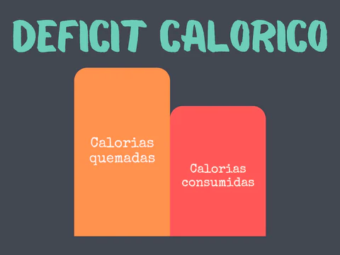
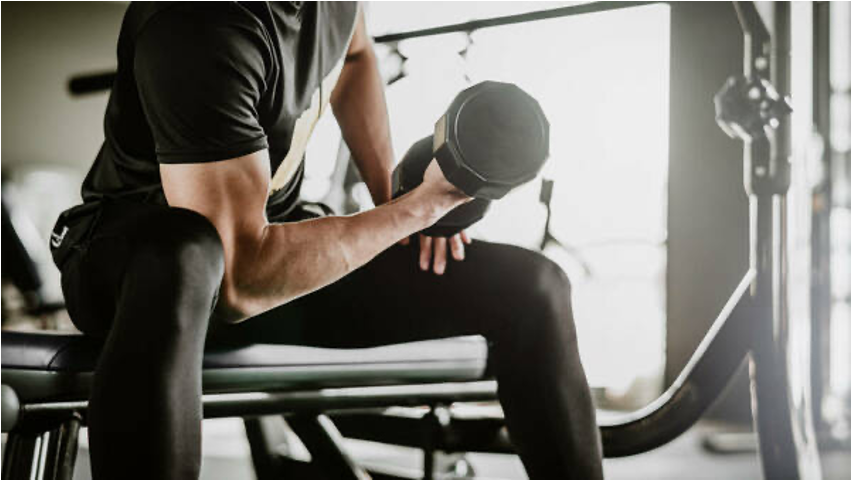

Pérdida de Grasa
Muchas ideas sobre cómo
perder grasa están equivocadas.
Aquí te mostraremos cómo hacerlo.
Hace millones de años la calorías tenían de mucha escasez
por ese motivo el cerebro detecta la pérdida de grasa
como una amenaza.
Por está razón nuestro cuerpo consta
con multitudes estrategias para evitar la pérdida de peso.
Científicamente hay tres aspectos fundamentales
para la pérdida de grasa de manera saludable:
-
Déficit energetico o Déficit calórico
-
Suficiente proteína
-
Entrenamiento de fuerza
Déficit calórico
Es una condición del cuerpo, debes crear un déficit calórico para que tú cuertpo
haga uso de sus reservas.
¿Qué es el déficit calçorico?
No es más que comer menos de lo que gastas. Al reducir la ingesta de calórias
se fuerza al cuepo a cubrir
esa ingesta calórica con la reserva de grasas.

Básicamente lo que tienes que hacer es comer menos cantidad de la comías
y así tu cuerpo reconoce que
entran menos ingesta calórica en él.
Te recomiendo Meal Plan para crearte un plan de dieta.
Suficiente proteína
Al igual que el agua, las porteínas son componentes muy importantes para nuestro
cuerpo. Participan en
casi todos los procesos celulares, sin ellos no tendríamos
energía para superar el día.
En el proceso de preder grasa, la proteína aporta tres funcionalidades importantes.

-
Aporta saciedad
-
Previene la perdida muscular
-
Eleva la termogénesis
¿Cuántas proteínas necesitas?
Científicamente se ha demostrado que se necesita 0,8 gramos de
proteínas por cada kilogramos
de peso corporal que exista en nuestro cuerpo.
Ejemplo:
Si pesas 65 Kg. Tendrías que comer 52 gramos de proteínas al día.
El calulo es peso por 0,8.
Recuerda estamos hablamos de macronutrientes y no de alimento. Esto quiere decir que
cien gramos
de carne tienen por ejemplo entre 20 y 25 gramos de proteína.
Entrenamiento de fuerza
La tercera condicón importante a la hora de perder peso es el entrenamiento de fuerza.
Es uno de los erróres de la perdida de peso es no hacer entrenamiento de fuerza.

El hacer entrenamiento de fuerza ayuda en la tarea de perder peso, porque al aumentar
la masa muscular,
incrementa también el gasto metabólico en reposo, lo que hará que
quemes más calorías incluso cuando
no haces ejercicio.
Te recomiendo Mad Muscles para crearte
el plan de ejercicos de fuerza.